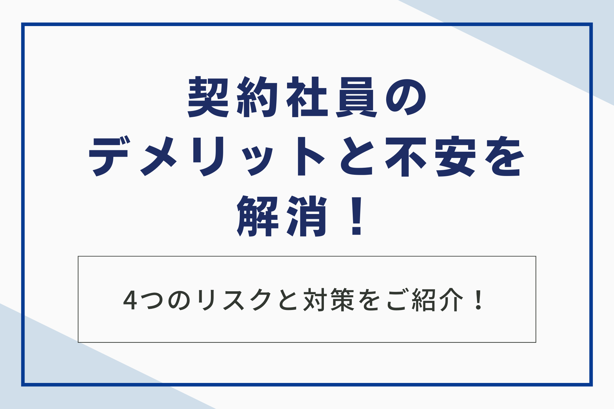

契約社員という働き方は、自身のライフスタイルに合わせて柔軟な勤務条件を選べる一方で、雇用の安定性や給与・昇進の機会など、正社員と比較して不安に感じる側面も少なくありません。特に、契約期間が満了する際の雇止めのリスクや、長く働いた後のキャリアアップの見通しについて悩んでいる方も多いのではないでしょうか。
本記事では、契約社員として働く上で直面する可能性のある4つのデメリットと、それらを回避・軽減するために知っておくべき3つの法的な知識について、専門家の視点から詳しく解説します。この記事を読めば、契約社員の制度を正しく理解し、デメリットを把握した上で、後悔のない最適な働き方を選ぶための知識が得られます。

契約社員の定義と正社員との4つの違い
契約社員として働くデメリットを正しく理解するためには、まず正社員との法的な位置づけや待遇面での違いを把握しておきましょう。労働基準法や労働契約法における両者の違いを知ることは、自身の権利を守り、不利益を被る事態を避けるための第一歩となります。
1.契約期間の有無
正社員は原則として無期雇用契約であり、定年までの雇用が保証されています。これに対し、契約社員は企業と期間を定めた有期雇用契約を結びます。
契約社員の契約期間は一般的に半年から3年以内で設定される場合が多く、この期間が満了すると、企業側は契約を更新するかどうかを判断します。企業側は契約期間の満了をもって契約を終了できます。
そのため、契約社員は正社員と比べて、雇用の不安定さというリスクを常に抱えます。また、労働契約法により、有期雇用契約の期間は原則として上限3年と定められています。
しかし、特定の例外規定も存在するため、契約書をよく確認しましょう。
2.業務内容と責任範囲
正社員は、将来的な部署異動や職種変更を前提として、幅広い業務を経験し、組織全体への貢献と責任を求められる傾向があります。一方、契約社員は、特定のプロジェクトや専門的な業務、あるいは繁忙期の一時的な増員といった、限定的な業務内容に特化して採用される場合が一般的です。
契約社員は、契約時に定められた業務範囲外の責任を負うことが少ない分、業務の専門性を高めやすいメリットもあります。しかし、裏を返せば、多様なスキルを身につけ、キャリアアップの幅を広げる機会が限定的になりがちです。
3.給与・賞与の待遇
正社員の給与体系は、毎年の昇給や賞与、退職金制度といった長期的なキャリアに基づく設計がされています。これに対し、契約社員は時給または月給が固定され、年俸制が採用される場合も多くあります。
契約社員は、契約時の給与額が正社員よりも高く設定されるケースもありますが、長期的に見ると昇給の幅が小さく、正社員との差が広がる傾向があるでしょう。特に、契約社員は賞与や退職金が支給されないケースが多いため、年収全体で比較した場合には、正社員との待遇差が顕著になるのが大きなデメリットの一つです。
4.福利厚生や手当
福利厚生や各種手当についても、正社員と契約社員の間には待遇差が見られる場合があります。例えば、住宅手当や家族手当といった生活保障的な手当や、社宅制度、財形貯蓄制度などの利用資格が正社員に限定されている企業も存在します。
ただし、2020年4月に施行された同一労働同一賃金の原則により、正社員と契約社員の間で、不合理な待遇差を設けることは禁止されています。通勤手当や一部の福利厚生については、業務内容や貢献度が同じであれば、待遇差が違法となる可能性があります。
そのため、企業に確認しましょう。

契約社員として働く上で知っておくべき4つのデメリット
契約社員という働き方を選ぶ際には、特定のメリットだけでなく、長期的なキャリアや生活設計に影響を及ぼす可能性のあるデメリットについても十分に理解しておく必要があります。特に、雇用の安定性や金銭面におけるリスクは、契約社員の最も大きな課題といえます。
1.雇用の不安定さが要因で精神的負担を感じる
契約社員の最も大きなデメリットは、雇用期間が定められていることに起因する雇用の不安定さです。契約期間が満了するたびに契約更新の可否が問われるため、特に契約更新の直前には、雇止めに対する精神的負担を感じる方が多くいます。
たとえ継続して同じ会社で働きたいという意欲があったとしても、会社の業績悪化や、採用時のプロジェクトが終了した場合など、自身の能力とは無関係な理由で契約が終了してしまうリスクが正社員よりも高くなります。常に次のキャリアや転職先を探す可能性を考慮しなければならない点は、長期的なキャリア設計において大きな障壁となりがちです。
2.昇給・昇進の機会が限定的である
契約社員は、その契約が限定的な業務内容に基づいて結ばれているケースが多いため、正社員と比較して昇給や昇進の機会が限定的となる傾向があります。企業が正社員に求めるのは、組織の中核を担う人材としての成長とマネジメント能力の獲得ですが、契約社員にはそこまでの期待がかけられない場合が多いためと考えられます。
成果を出したとしても、それが昇給や昇進に直結しにくいことは、モチベーションの維持という観点からも大きなデメリットとなりえます。長期的なキャリアプランを描くのであれば、契約時に正社員登用制度の有無や、その具体的な条件を確認しましょう。
3.賞与や退職金の支給がない場合が多い
多くの企業において、賞与（ボーナス）や退職金は、原則として正社員を対象とした制度であり、契約社員には支給されないケースがほとんどです。これらは、企業が長期雇用と貢献を前提として従業員に支払うものであり、有期雇用契約である契約社員は、その対象から外されやすい傾向があります。
月々の給与額が高くても、賞与や退職金がないために、年収ベースで見ると正社員よりも待遇が低くなるケースは少なくありません。また、退職金がない場合は、将来の老後資金の形成を自身で行う必要があります。
これは、長期的な生活設計において金銭的な負担が増すというデメリットにつながります。
4.住宅ローンなどの審査に通りにくい
契約社員という雇用形態は、雇用の不安定さから、住宅ローンや自動車ローンなどの金融機関の審査において不利に働く可能性があります。金融機関は、ローンの返済能力を判断する際、安定した継続的な収入を重視します。
そのため、契約期間が定められている契約社員は、正社員よりも信用度が低いと判断されやすいのです。特に、契約更新を繰り返し、勤続年数が長くなっている場合でも、雇用形態そのものが審査に影響を及ぼす場合があります。
大きな買い物を予定している方にとっては、ローンの借り入れが難しくなる可能性があるという点は、契約社員として働く上での大きな注意点となります。
デメリットを回避するための3つの法的な知識
契約社員が抱えるデメリットの中には、法的な知識を持てば不当な扱いを防いだり、自身の権利を主張したりできるものがあります。労働者を保護するための法律は改正を重ねており、特に無期雇用転換ルールと同一労働同一賃金の原則は、契約社員が知っておくべき最も重要な知識です。
1.無期雇用転換ルール（5年ルール）の適用
無期雇用転換ルールとは、有期雇用契約が5年を超えて反復更新された場合、労働者からの申し込みにより、期間の定めのない無期雇用契約に転換される制度です。このルールは「労働契約法第18条」に定められており、契約社員が雇用の不安定さを解消し、長期的な安心感を得るための非常に重要な権利となっています。
企業は労働者からの無期転換の申し込み拒否はできず、申し込みがあった時点で、自動的に無期雇用契約が成立します。ただし、無期転換されたとしても、直ちに正社員となるわけではありません。
給与や待遇といった労働条件は、就業規則や個別の労働契約に基づいて決定されるため、転換後の労働条件を事前に確認しましょう。
2.雇止めに関するルールと不当な解雇への対処
雇止めとは、契約期間満了により契約を更新せずに終了させる場合を指します。これが不当に行われるのを防ぐためのルールが設けられています。
特に、過去に何度も契約更新を繰り返している場合や、合理的な理由なく契約を更新しない場合、労働者は雇止めが無効であると主張できる可能性があります。不当な解雇を防ぐためには、自身が過去にどのような契約形態で、どの程度の期間働いてきたかを記録しておきましょう。
もし不当な雇止めであると感じた場合は、労働基準監督署や弁護士に相談するなど、適切な機関を通じて対処して、自身の権利を守る必要があります。
3.同一労働同一賃金の原則と待遇差の是正
同一労働同一賃金の原則は「同じ仕事をしているのなら、雇用形態にかかわらず同じ賃金・待遇にすべき」という考え方に基づいたルールです。これにより、正社員と契約社員の間で、業務内容や責任の程度が同じであるにもかかわらず、賞与や各種手当、福利厚生などに不合理な待遇差を設けることは、法律で禁止されています。
もしご自身の職場で、正社員と同じ仕事をしているにもかかわらず、不合理な待遇差があると疑われる場合は、企業に対して差別の根拠を説明するよう求めることが可能です。企業からの説明に納得できない場合は、都道府県の労働局などに相談をして、待遇差の是正に向けたサポートを受けましょう。
契約社員のデメリットを上回る3つのメリット
契約社員という働き方にはデメリットが伴いますが、それらを上回るメリットも存在します。これらのメリットは、特にキャリアの方向性が明確な方や、ライフスタイルを最優先にしたい方にとって、大きな魅力となりえます。
1.勤務時間や勤務地など柔軟な働き方を実現できる
契約社員は、契約時に業務内容だけでなく、勤務時間や勤務地といった労働条件を限定できるため、柔軟な働き方を実現しやすいという大きなメリットがあります。正社員では難しい時短勤務や、特定の曜日・時間帯での勤務、自宅近くの事業所での勤務などを契約に盛り込みやすくなります。
これにより、育児や介護、あるいは自身のキャリアアップのための学習時間など、プライベートな時間を確保しながら仕事に取り組めるでしょう。生活リズムを崩さずに働きたい方や、ワークライフバランスを重視する方にとっては、契約社員は最適な選択肢の一つです。
2.特定のスキルや経験に集中して働ける
契約社員は、契約に基づいて特定の業務に専念できるため、自身の専門性やスキルを最大限に活かして働けます。正社員のように、意図しない部署への異動や、専門外の業務を任されるリスクが低いため、一つの分野のスキルや経験に集中して高めていけるというメリットがあります。
これにより、短期間で実績を積み重ね、市場価値の高い専門家としてのキャリアを築けるでしょう。契約期間が満了した後も、その専門性の高さを活かして、より良い条件の企業へ転職するための
強力なアピールポイントにできます。
3.正社員登用を目指すためのステップにできる
多くの企業には、契約社員から正社員への登用制度が設けられています。契約社員として働けば、正社員を目指すためのステップとして活用可能です。
いきなり正社員として採用されるのが難しい企業であっても、契約社員として入社し、そこで実績と貢献意欲を示せば、社内での評価を高められます。これにより、企業の文化や職場の雰囲気を働きながらじっくりと見極められます。
そのため「入社後に想像と違った」というミスマッチを防げるでしょう。正社員登用を前提として採用活動を行っている企業もあります。求人情報を探す際には、この制度の有無や具体的な実績を確認してください。
なお、社員登用の概要については、こちらの記事でご紹介しています。
関連記事：【社員登用とは】アルバイト・パートから正社員への道筋と選ばれる人の特徴を解説
契約社員の仕事探しなら「株式会社ベルジャパン」｜きめ細やかなサポートと多様な非公開求人

「株式会社ベルジャパン」は、有料職業紹介業において、豊富な実績と求職者に寄り添ったきめ細やかなサポート体制を強みとしています。契約社員として働く上で、雇用の不安定さや待遇面への不安を感じる方に対し、その不安を解消し、最適なキャリア選択をサポートできる体制が整っています。
独自のネットワークを活かして、非公開求人を含む多様な案件を紹介できるでしょう。そのため、体力的な負担が少ない仕事や、生活リズムを崩さずに働ける勤務体系など、あなたの希望に合った仕事を見つけられる可能性が高くなります。
専任のコンサルタントが一人ひとりのキャリアやスキル、ライフスタイルを丁寧にヒアリングします。期間工の仕事に不安を感じている方でも安心して最適な選択が可能です。求職者・企業双方から高い評価を得ており、一人ひとりに最適化されたサポートを実現しています。
契約社員の仕事探しで一歩踏み出せないでいる方の心強い味方となります。⇒株式会社ベルジャパンの公式サイトはこちら
契約社員のデメリットでよくある3つの質問
契約社員のデメリットでよくある質問をご紹介します。それぞれの内容について詳しくみていきましょう。
質問1.契約社員でも有給休暇は取得できますか？
契約社員であっても、労働基準法に基づき有給休暇（年次有給休暇）を取得する権利があります。有給休暇が付与される条件は、正社員と基本的に同じです。具体的には、雇入れの日から6ヶ月間継続して勤務し、かつその期間の全労働日の8割以上出勤している場合に付与されます。
有給休暇の付与日数は、週の所定労働時間や日数によって異なりますが、週5日勤務の場合は、半年後に10労働日付与されます。企業が契約社員だからという理由で有給休暇の取得を拒否したり、正社員より不利な扱いをしたりする場合は違法となります。
そのため、自身の権利を正しく理解しておきましょう。
質問2.契約更新の回数に制限はありますか？
法律上、契約更新の回数自体に一律の制限はありません。しかし、契約更新を繰り返せば、労働契約法第18条の無期雇用転換ルールの対象となります。このルールは、有期雇用契約が5年を超えて反復更新された場合に、労働者が無期雇用への転換を申し込めるというものです。
企業側は、このルール適用を避けるために、意図的に契約期間が5年に満たないように雇止めを行うケースもあります。しかし、契約期間が満了するたびに契約更新の回数や通算期間を確認し、自身の権利がいつ発生するのかを把握しておくことが、雇用の安定につながります。
質問3.契約社員から正社員になるための近道はありますか？
契約社員から正社員になるための最も確実な近道は、入社前から正社員登用制度が設けられている企業を選びましょう。求人情報に「正社員登用あり」と明記されているかを確認してください。
また、面接の際に、登用後の待遇や、過去の登用実績、登用されるための具体的な評価基準などを質問します。入社後は、与えられた業務で期待以上の成果を出し、キャリアアップへの意欲と組織への貢献姿勢を示します。
また、企業によっては、登用試験や面談が設けられている場合もあるでしょう。そのため、事前に情報を収集し、計画的に準備を進めてください。
まとめ
契約社員という働き方は、雇用の不安定さ、昇給・昇進の機会の限定性、賞与や退職金の欠如といった、無視できない4つのデメリットを伴います。しかし、その一方で、柔軟な働き方を実現できる点や、特定のスキルに集中して専門性を高められるという大きなメリットも存在します。
これらのデメリットを軽減するためには、無期雇用転換ルールや同一労働同一賃金の原則といった法的な知識を正しく理解し、自身の権利を守るための準備をしておきましょう。デメリットとメリットを天秤にかけ、最終的に自身のキャリアプランとライフスタイルに最も合った働き方を選択すれば、後悔のない選択につながると考えられます。
契約社員として働くことには、雇用の安定性や待遇面での不安がつきものです。
「株式会社ベルジャパン」では、専任コンサルタントによるきめ細やかなサポートと丁寧なヒアリングを通じて、一人ひとりのキャリアやライフスタイルに最適化された仕事を紹介しています。体力的な負担や生活リズムの崩れといった具体的な懸念にも寄り添い、非公開求人を含む多様な案件の中から、あなたの希望を最大限に叶える最適な選択をサポートします。
契約社員・期間工の仕事に対する不安を解消し、納得のいくキャリアを築くために、まずは公式サイトから無料相談を始めてみましょう。⇒株式会社ベルジャパンの公式サイトはこちら